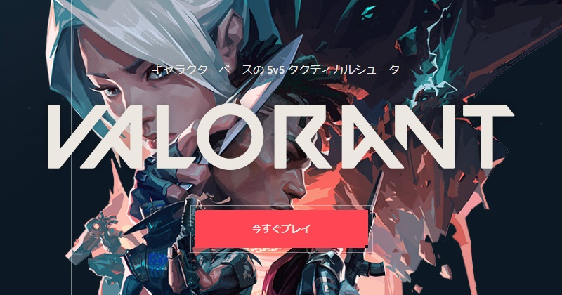

ここでは、PCゲームであるVALORANT(ヴァロラント)の詳細とその魅力を説明していきます
VALORANTとは、Riot Gamesが提供する、5vs5で行われる競技性の高いタクティカルシューター
攻撃側、防衛側に分かれ、1ゲーム13ラウンド先取のラウンド制
ラウンド取得条件
多くのキャラクターとそれぞれの異なるスキルを駆使し勝利を目指す
VALORANTの魅力は、一瞬の判断や行動が勝敗に影響する高い競技性とキャラクターごとに異なるスキルをどう組み合わせるか、という戦略性だと考えます。
自分のせいで負けることもあれば、自分のプレーでチームを勝利に導くこともあるというゲーム性が楽しさを増幅させています。
しかも無料で遊べる！